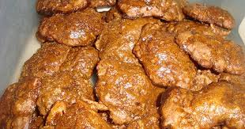

com só olhar nesta pagina voce podra olhar uma delicia que os venezuelanos preparam bem.
voce nao conhecia os melhores beijinhos ate o momento.
OS BEIJINHOS DE COCO DA VENEZUELA
Os beijos de coco são doces com uma longa tradição na Venezuela e em outros países como Brasil, Colômbia, Cuba e Porto Rico. São uma delícia tropical que pode ser saboreada em lanches, acompanhada de café com leite ou chicha.

Na Venezuela, é comum encontrar beijos de coco nas mãos de vendedores ambulantes nas estradas,
costas ou nas portas das casas de algumas cidades. Eles abundam nos estados de Anzoátegui, Aragua, Barlovento, Miranda, Sucre, Vargas e Zulia, onde é costume prepará-los com a polpa de coco que resta da extração de leite. Aqui está a receita.
receita dos beijos de coco duce
Agora voce vai quer fazer este duce, bem aqui temos a receita para voces.
1 coco seco ralado
Meio papel panela
2 ovos
3 colheres de sopa de farinha
1 colher de chá de fermento em pó
Um litro de água
PREPARAÇÃO
O próximo passo é a preparação, tudo tem um passo a passo, para que você tenha o doce delicioso, você deve seguir este método de como fazê-lo.
as claras das gemas dos ovos e bata as duas.
Prepare um melaço grosso com o papel e um pouco de água.
Ao assar, adicione o coco ralado, as claras, as gemas, a farinha, o fermento e misture bem todos os ingredientes.
Com uma colher, pegue porções e coloque-as em um prato com manteiga. Asse em forno a 120 ° C por aproximadamente 25 minutos.